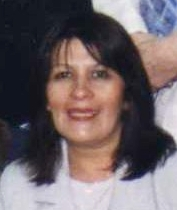
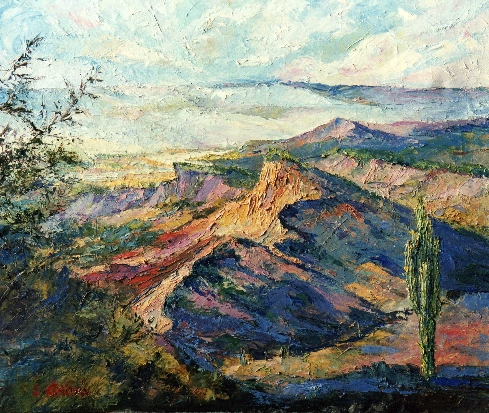
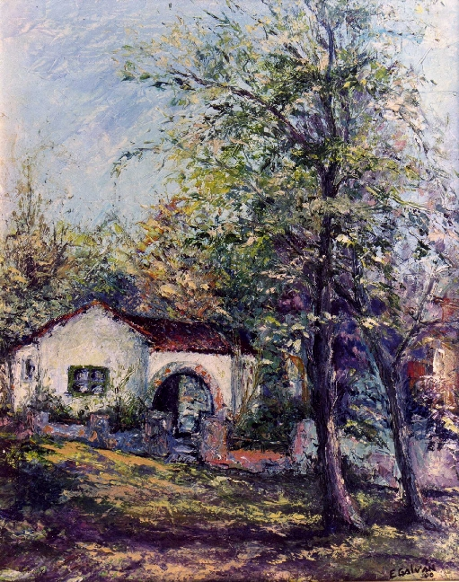
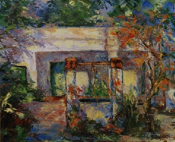

Desde el vuelo...
| EUGENIA DEL CARMEN GALVÁN (Yenni) |
"El arte, para mí, es un acto creativo
que forma parte de los que han sido los sueños de la niñez , hasta
lo que es hoy
mi experiencia personal.
Me atrae toda la creación: la vibración
de colores, los sonidos y aromas que traen los paisajes..."
Así comienza nuestro diálogo con Eugenia Galván, pintora
residente en la localidad de Unquillo, Córdoba, Argentina; mujer sencilla
que expresa acerca de su existencia:"Como mujer, soy feliz; tengo un esposo
muy bueno y dos hijos maravillosos.También tengo en
en guarda un joven de 18 años. Trato de edificar día a día
este hogar con Dios. Sé que no es fácil, desempeñarse como
mamá en esta época...
Me gusta mucho la cocina y toda la artesanía. Mis tardes son "mías"
y las disfruto. Apuesto siempre a las amistades y conversar y charlar ...
y trato de levantar el ánimo quienes lo necesitan … "
"La música me inspira !!!!!!! La luz , como
la oscuridad; el silencio; también el bullicio de la risa de
los niños , ladridos de perros y De este modo, esta ave en vuelo a través del arte,
tuvo educación formal durante tres años, |
 |
 "Queriendo volar" 50 x 60 cm. |
Pero,
los recuerdos, la remontan a su madre; que "me enseñó con sencillez y mucho amor y ésa es la semilla sembrada que hoy cosecho: “ la libertad del arte no tiene límites”, como la creatividad. Existen también etapas profundas, como la despedida de una ser amado que me hizo alejar de la pintura; o bueno, como mamá cuando se tiene dos chicos pequeños... pero siempre fue temporario.... y con humildad digo que en uno lo mejor, está por venir!!!!!" |
| R. Moreno Villafuerte (Profesor de Pintura y Dibujo), se expresa acerca de su pintura: "Plasma en la tela el paisaje y los rincones "Se destaca por su rica paleta de color,
Es toda una visión poética, la pintura de Yenny y habla del amor al paisaje eternizado en el tiempo" |
 "Casa de arcos" 50 x 40 cm |
 "Recuerdos" 40 x 50 cm.
|
El periódico "Menorca" (España), en su edición del 13/06/07, a través de Arcadi Gomila, se expresa por el Centre Cultural de Alaior en el artículo titulado "Eugenia Galván presenta sus pinturas sobre Argentina": "una exposición de óleos...en una explosión de color y luz recreadas en un estilo figurativo, con toques impresionistas y en una atmósfera bucólica que invita a la contemplación sosegada" "Sus cuadros, están elaborados a base de pincel
y de espátula, con trazos gruesos y encendidos en algunas telas,
que les da fuerte colorido y un encendido protagonismo, y en otras a
bases de líneas más tenues con un carácter lírico
en los que la naturaleza se muestra más suave y nos muestran
la belleza del paisaje amplio e infinito de su país...todo ello
en un colorido que acentúa la sensación de calma y el
realismo de un paisaje lleno de formas y colores..." |
Tranquilidad y discernimiento, permiten que la evolución
sea constante e inagotable.
Ardor en la realización de la tarea y consecuente cuidado de la propia
virtud; una forma de vivir en digna integridad…
El progreso ha de permanecer…
En la orilla del lago, alistándose para continuar nuevamente el vuelo
en prosecución del viaje, la mirada sigue el trayecto planeado.
La vida vivida con fe, es la mejor propuesta.
Musicalización AnneMurray_YouNeededMe.mid